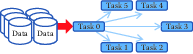

Chapter 5 Scaling up through Parallel and Distributed Computing
Huy Vo and Claudio Silva
This chapter provides an overview of techniques that allow us to analyze large amounts of data using distributed computing (multiple computers concurrently). While the focus is on a widely used framework called MapReduce and popular implementations such as Apache Hadoop and Spark, the goal of the chapter is to provide a conceptual and practical framework to deal with large amounts of data that may not fit in memory or take too long to analyze on a single computer. It is important to note that these frameworks do not result in analysis that is better - they are useful because they allow us to process large amounts of data faster and/or without getting access to a single massive computer with lots of memory (RAM) and processing power (CPU).
5.1 Introduction
As the amount of data available for social science research increases, we have to determine how to perform our analysis quickly and efficiently. One way to deal with large amounts of data that may not fit in memory or take too long to analyze on a single computer is to subsample the data or to simplify the analysis. Another approach is to use all the data by making use of multiple computers concurrently to do the analysis. The use of parallel computing to deal with large amounts of data has been a common approach in physical sciences. Data analysts have routinely been working on data sets much larger than a single machine can handle for several decades, especially at the DOE National Laboratories (Sethian et al. 1991; Crossno, Cline, and Jortner 1993) where high-performance computing has been a major technology trend. This is also demonstrated by the history of research in distributed computing and data management going back to the 1980s.
There are many ways to do distributed and parallel computing, ranging from completely flexible (but more complex to use) approaches such as Message Passing Interface (MPI) (Gropp, Lusk, and Skjellum 2014) to more restrictive (but much easier to use) approaches such as MapReduce. MPI allows you to do anything with as much efficiency as your MPI skills allow you to code while MapReduce allows a more restrictive set of analysis to be done (possibly less efficiently) but is much easier to learn and implement.
This chapter focuses on one such framework, called MapReduce, to do large-scale data analysis distributed across multiple computers. We describe the MapReduce framework, work through an example of using it, and highlight one implementation of the framework called Hadoop in detail.32
Box: Parallel Computing Examples
Al Aghbari et al. (2019) introduce GeoSim, an algorithm used for clustering users in any social network site into communities based on the semantic meaning of the nodes interests as well as their relationships with each other. The parallelised version of GeoSim utilizes the MapReduce model to run on multiple machines simultaneously and get faster results.
Kolb et al. (2012) developed a tool DeDoop that uses Hadoop to do efficient record linkage (remember chapter Record Linkage?) and scale to large data sets. Tasks such as record linkage where we can easily break down the larger task into smaller chunks (such as comparing two records to see if they belong to the same entity) that can be done in parallel are ideally suited for MapReduce frameworks.
Ching et al. (2012) describe the data infrastructure at Facebook with MapReduce at the core of Facebook’s data analytics engine. Over half a petabyte of new data arrives in the warehouse every 24 hours, and ad-hoc queries, data pipelines, and custom MapReduce jobs process this raw data around the clock to generate more meaningful features and aggregations.
5.2 MapReduce
The MapReduce framework was proposed by Jeffrey Dean and Sanjay Ghemawat at Google in 2004 (Dean and Ghemawat 2004). Its origins date back to conceptually similar approaches first described in the early 1980s. Using the MapReduce framework requires turning the analysis problem we have into operations that the framework supports - these are map and reduce. The “map” operation takes the input and splits up the task into multiple (parallel) components, and the “reduce” operation consolidates the results of the parallel “mapped” tasks and produces the final output. In order to use the MapReduce framework, we need to break up our tasks in to map and reduce operations and implement these two operations.
Example: Counting NSF awards
To gain a better understanding of these MapReduce operations, let’s take a trivial task that may need to be done on billions of records, causing scalability challenges. Imagine that we have a list of NSF principal investigators, along with their email information and award IDs as below. Our task is to count the number of awards for each institution. For example, given the four records below, we will discover that the Berkeley Geochronology Center has two awards, while New York University and the University of Utah each have one.
AwardId,FirstName,LastName,EmailAddress
0958723,Roland,Mundil,rmundil@bgc.org
0958915,Randall,Irmis,irmis@umnh.utah.edu
1301647,Zaher,Hani,zh8@nyu.edu
1316375,David,Shuster,dshuster@bgc.orgWe observe that institutions can be distinguished by their email address domain name. Thus, we adopt a strategy of first grouping all award IDs by domain names, and then counting the number of distinct awards within each group. In order to do this, we first set the function to scan input lines and extract institution information and award IDs. Then, in the function, we simply count unique IDs on the data, since everything is already grouped by institution. Python pseudo-code is provided in Listing MapReduce.
# Input : a list of text lines
# Output : a list of domain name and award ids
def MAP(lines):
for line in lines:
fields = line.strip('\n').split(',')
awardId = fields[0]
domainName = fields[3].split('@')[-1].split('.')[-2:]
yield (domainName, awardId)
# Input : a list of domain name and award ids
# Output : a list of domain name and award count
def REDUCE(pairs):
for (domainName, awardIds) in pairs:
count = len(set(awardIds))
yield (domainName, count)map and reduce functions to count the number of awards per institution
In the map phase, the input will be transformed into tuples of institutions and award ids:
"0958723,Roland,Mundil,rmundil@bgc.org" → ("bgc.org", 0958723) "0958915,Randall,Irmis,irmis@umnh.utah.edu" → ("utah.edu", 0958915) "1301647,Zaher,Hani,zh8@nyu.edu" → ("nyu.edu", 1301647) "1316375,David,Shuster,dshuster@bgc.org" → ("bgc.org", 1316375)
Then the tuples will be grouped by institutions and be counted by the function.
("bgc.org", [0958723,1316375]) → ("bgc.org", 2) ("utah.edu", \[0958915\]) → ("utah.edu", 1) ("nyu.edu", \[1301647\]) → ("nyu.edu", 1)
As we have seen so far, the MapReduce programming model is quite simple and straightforward, yet it supports a simple parallelization model. In fact, it has been said to be too simple and criticized as “a major step backwards” (DeWitt and Stonebraker 2008) for large-scale, data-intensive applications. It is hard to argue that MapReduce is offering something truly innovative when MPI has been offering similar scatter and reduce operations since 1995, and Python has had high-order functions (map, reduce, filter, and lambda) since its 2.2 release in 1994. However, the biggest strength of MapReduce is its simplicity. Its simple programming model has brought many non-expert users to analyzing large amounts of data. Its simple architecture has also inspired many developers to develop advanced capabilities, such as support for distributed computing, data partitioning, and streaming processing. A downside of this diversity of interest is that available features and capabilities can vary considerably, depending on the specific implementation of MapReduce that is being used.
As mentioned above, MapReduce is a programming model. In order to implement an analysis in MapReduce, we need to select an implementation of MapReduce. Two most commonly used implementations of the MapReduce model are Hadoop and Spark, that we describe in more detail below.
5.3 Apache Hadoop MapReduce
Apache Hadoop (or Hadoop)33 was originally designed to run in environments with thousands of machines. Supporting such a large computing environment puts several constraints on the system; for instance, with so many machines, the system had to assume computing nodes would fail. Hadoop is an enhanced MapReduce implementation with the support for fault tolerance, distributed storage, and data parallelism through two added key design features: (1) a distributed file system called the Hadoop Distributed File System (HDFS); and (2) a data distribution strategy that allows computation to be moved to the data during execution.
5.3.1 The Hadoop Distributed File System
The Hadoop Distributed File System (Apache Software Foundation, n.d.)(Apache Hadoop, n.d.) is a distributed file system that stores data across all the nodes (machines) of a Hadoop cluster. HDFS splits large data files into smaller blocks (chunks of data) which are managed by different nodes in a cluster. Each block is also replicated across several nodes as an attempt to ensure that a full copy of the data is still available even in the case of computing node failures. The block size as well as the number of replications per block are fully customized by users when they create files on HDFS. By default, the block size is set to 64 MB with a replication factor of 3, meaning that the system may encounter at least two concurrent node failures without losing any data. HDFS also actively monitors failures and re-replicates blocks on failed nodes to make sure that the number of replications for each block always stays at the user-defined settings. Thus, if a node fails, and only two copies of some data exist, the system will quickly copy those data to a working node, thus raising the number of copies to three again. This dynamic replication is the primary mechanism for fault tolerance in Hadoop.
Note that data blocks are replicated and distributed across several machines. This could create a problem for users, because if they had to manage the data manually, they might, for example, have to access more than one machine to fetch a large data file. Fortunately, Hadoop provides infrastructure for managing this complexity seamlessly, including command line programs as well as an API that users can employ to interact with HDFS as if it were a local file system. For example, one can run simple Linux commands such as ls and mkdir to list and create a directory on HDFS, or even use to inspect file contents the same way as one would do in a Linux file system. The following code shows some examples of interacting with HDFS.
# Creating a folder
hadoop dfs -mkdir /hadoopiseasy
# Upload a CSV file from our local machine to HDFS
hadoop dfs -put importantdata.csv /hadoopiseasy
# Listing all files under hadoopiseasy folder
hadoop dfs -ls /hadoopiseasy
# Download a file to our local machine
hadoop dfs -get /hadoopiseasy/importantdata.csv5.3.2 Hadoop Setup: Bringing compute to the data
There are two parts of the computing environment when using Hadoop: 1. a compute cluster with substantial computing power (e.g., thousands of computing cores) 2. a storage cluster with lots of disk space, capable of storing and serving data quickly to the compute cluster.
These two clusters have quite different hardware specifications: the first is optimized for CPU performance and the second for storage. The two systems are typically configured as separate physical hardware.

Figure 5.1: Top: The traditional parallel computing model where data are brought to the computing nodes. Bottom: Hadoop’s parallel computing model: bringing compute to the data (Lockwood 2015)
Running compute jobs on such hardware often goes like this. When a user requests to run an intensive task on a particular data set, the system will first reserve a set of computing nodes. Then the data are partitioned and copied from the storage server into these computing nodes before the task is executed. This process is illustrated in Figure 5.1 (top). This computing model will be referred to as bringing data to computation. In this model, if a data set is being analyzed in multiple iterations, it is very likely that the data will be copied multiple times from the storage cluster to the compute nodes without reusability. This is because the compute node scheduler normally does not have or keep knowledge of where data have previously been held. The need to copy data multiple times tends to make such a computation model inefficient, and I/O becomes the bottleneck when all tasks constantly pull data from the storage cluster (the red arrow). This in turn leads to poor scalability; adding more nodes to the computing cluster would not increase its performance.
To solve this problem, Hadoop implements a bring compute to the data strategy that combines both computing and storage at each node of the cluster. In this setup, each node offers both computing power and storage capacity. As shown in Figure 5.1 (bottom), when users submit a task to be run on a data set, the scheduler will first look for nodes that contain the data, and if the nodes are available, it will schedule the task to run directly on those nodes. If a node is busy with another task, data will still be copied to available nodes, but the scheduler will maintain records of the copy for subsequent use of the data. In addition, data copying can be minimized by increasing the data duplication in the cluster, which also increases the potential for parallelism, since the scheduler has more choices to allocate computing without copying. Since both the compute and data storage are closely coupled for this model, it is best suited for data-intensive applications.
Given that Hadoop was designed for batch data processing at scale, this model fits the system nicely, especially with the support of HDFS. However, in an environment where tasks are more compute intensive, a traditional high-performance computing environment is probably best since it tends to spend more resources on CPU cores. It should be clear now that the Hadoop model has hardware implications, and computer architects have optimized systems for data-intensive computing.
5.3.3 Hardware provisioning
Hadoop requires a distributed cluster of machines to operate efficiently. (It can be set up to run entirely on a single computer, but this should only be done for technology demonstration purposes.) This is mostly because the MapReduce performance heavily depends on the total I/O throughput (i.e., disk read and write) of the entire system. Having a distributed cluster, where each machine has its own set of hard drives, is one of the most efficient ways to maximize this throughput.
A typical Hadoop cluster consists of two types of machine: masters and workers. Master machines are those exclusively reserved for running services that are critical to the framework operations. Some examples are the NameNode and the JobTracker services, which are tasked to manage how data and tasks are distributed among the machines, respectively. The worker machines are reserved for data storage and for running actual computation tasks (i.e., map and reduce). It is normal to have worker machines that can be included or removed from an operational cluster on demand. This ability to vary the number of worker nodes makes the overall system more tolerant of failure. However, master machines are usually required to be running uninterrupted.
Provisioning and configuring the hardware for Hadoop, like any other parallel computing, are some of the most important and complex tasks in setting up a cluster, and they often require a lot of experience and careful consideration. Major big data vendors provide guidelines and tools to facilitate the process (Apache Software Foundation, n.d.; Cloudera, n.d.; Baldeschwieler 2011). most decisions will be based on the types of analysis to be run on the cluster, for which only you, as the user, can provide the best input.
5.3.4 Programming in Hadoop
Now that we are equipped with the knowledge that Hadoop is a MapReduce implementation that runs on HDFS and a bring-compute-to-the-data model, we can go over the design of a Hadoop MapReduce job. A MapReduce job is still composed of three phases: map, shuffle, and reduce. However, Hadoop divides the map and reduce phases into smaller tasks.
Each map phase in Hadoop is divided into five tasks: input format, record reader, mapper, combiner, and partitioner. An input format task is in charge of talking to the input data presumably sitting on HDFS, and splitting it into partitions (e.g., by breaking lines at line breaks). Then a record reader task is responsible for translating the split data into the key–value pair records so that they can be processed by the mapper. By default, Hadoop parses files into key–value pairs of line numbers and line contents. However, both input formats and record readers are fully customizable and can be programmed to read custom data including binary files. It is important to note that input formats and record readers only provide data partitioning; they do not move data around computing nodes.
After the records are generated, mappers are spawned—typically on nodes containing the blocks—to run through these records and output zero or more new key–value pairs. A mapper in Hadoop is equivalent to the map function of the MapReduce model that we discussed earlier. The selection of the key to be output from the mapper will heavily depend on the data processing pipeline and could greatly affect the performance of the framework. Mappers are executed concurrently in Hadoop as long as resources permit.
A combiner task in Hadoop is similar to a function in the MapReduce framework, but it only works locally at each node: it takes output from mappers executed on the same node and produces aggregated values. Combiners are optional but can be used to greatly reduce the amount of data exchange in the shuffle phase; thus, users are encouraged to implement this whenever possible. A common practice is when a reduce function is both commutative and associative, and has the same input and output format, one can just use the reduce function as the combiner. Nevertheless, combiners are not guaranteed to be executed by Hadoop, so this should only be treated as a hint. Its execution must not affect the correctness of the program.
A partitioner task is the last process taking place in the map phase on each mapper node, where it hashes the key of each key–value pair output from the mappers or the combiners into bins. By default, the partitioner uses object hash codes and modulus operations to direct a designated reducer to pull data from a map node. Though it is possible to customize the partitioner, it is only advisable to do so when one fully understands the intermediate data distribution as well as the specifications of the cluster. In general, it is better to leave this job to Hadoop.
Each reduce phase in Hadoop is divided into three tasks: reducer, output format, and record writer. The reducer task is equivalent to the reduce function of the MapReduce model. It basically groups the data produced by the mappers by keys and runs a reduce function on each list of grouping values. It outputs zero or more key–value pairs for the output format task, which then translates them into a writable format for the record writer task to serialize on HDFS. By default, Hadoop will separate the key and value with a tab and write separate records on separate lines. However, this behavior is fully customizable. Similarly, the map phase reducers are also executed concurrently in Hadoop.
Figure 5.2: Data transfer and communication of a MapReduce job in Hadoop. Data blocks are assigned to several maps, which emit key–value pairs that are shuffled and sorted in parallel. The reduce step emits one or more pairs, with results stored on the HDFS
5.3.5 Programming language support
Hadoop is written entirely in Java, thus it is best supporting applications written in Java. However, Hadoop also provides a streaming API that allows arbitrary code to be run inside the Hadoop MapReduce framework through the use of UNIX pipes. This means that we can supply a mapper program written in Python or C++ to Hadoop as long as that program reads from the standard input and writes to the standard output. The same mechanism also applies for the combiner and reducer. For example, we can develop from the Python pseudo-code in Listing MapReduce to a complete Hadoop streaming mapper (Listing Mapper) and reducer (Listing Reducer).
#!/usr/bin/env python
import sys
def parseInput():
for line in sys.stdin:
yield line
if __name__=='__main__':
for line in parseInput():
fields = line.strip('\n').split(',')
awardId = fields[0]
domainName = fields[3].split('@')[-1].split('.')[-2:]
print('%s\t%s' % (domainName,awardId))#!/usr/bin/env python
import sys
def parseInput():
for line in sys.stdin:
yield line
if __name__=='__main__':
for line in parseInput():
(domainName, awardIds) = line.split('\t')
count = len(set(awardIds))
print('%s\t%s' % (domainName, count))It should be noted that in Hadoop streaming, intermediate key–value pairs (the data flowing between mappers and reducers) must be in tab-delimited format, thus we replace the original yield command with a print formatted with tabs. Though the input format and record reader are still customizable in Hadoop streaming, they must be supplied as Java classes. This is one of the biggest limitations of Hadoop for Python developers. They not only have to split their code into separate mapper and reducer programs, but also need to learn Java if they want to work with nontextual data.
5.3.6 Benefits and Limitations of Hadoop
Fault Tolerance: By default, HDFS uses checksums to enforce data integrity on its file system and data replication for recovery of potential data losses. Taking advantage of this, Hadoop also maintains fault tolerance of MapReduce jobs by storing data at every step of a MapReduce job to HDFS, including intermediate data from the combiner. Then the system checks whether a task fails by either looking at its heartbeats (data activities) or whether it has been taking too long. If a task is deemed to have failed, Hadoop will kill it and run it again on a different node. The time limit for the heartbeats and task running duration may also be customized for each job. Though the mechanism is simple, it works well on thousands of machines. It is indeed highly robust because of the simplicity of the model.
Performance: Hadoop has proven to be a scalable implementation that can run on thousands of cores. However, it is also known for having a relatively high job setup overhead and suboptimal running time. An empty task in Hadoop (i.e., with no mapper or reducer) can take roughly 30 seconds to complete even on a modern cluster. This overhead makes it unsuitable for real-time data or interactive jobs. The problem comes mostly from the fact that Hadoop monitoring processes only live within a job, thus it needs to start and stop these processes each time a job is submitted, which in turns results in this major overhead. Moreover, the brute force approach of maintaining fault tolerance by storing everything on HDFS is expensive, especially for large data sets.
Hadoop streaming support for non-Java applications: As mentioned previously, non-Java applications may only be integrated with Hadoop through the Hadoop streaming API. However, this API is far from optimal. First, input formats and record readers can only be written in Java, making it impossible to write advanced MapReduce jobs entirely in a different language. Second, Hadoop streaming only communicates with Hadoop through Unix pipes, and there is no support for data passing within the application using native data structure (e.g., it is necessary to convert Python tuples into strings in the mappers and convert them back into tuples again in reducers).
Real-time applications: With the current setup, Hadoop only supports batch data processing jobs. This is by design, so it is not exactly a limitation of Hadoop. However, given that more and more applications are dealing with real-time massive data sets, the community using MapReduce for real-time processing is constantly growing. Not having support for streaming or real-time data is clearly a disadvantage of Hadoop over other implementations.
Limited data transformation operations: This is more of a limitation of MapReduce than Hadoop per se. MapReduce only supports two operations, map and reduce, and while these operations are sufficient to describe a variety of data processing pipelines, there are classes of applications that MapReduce is not suitable for. Beyond that, developers often find themselves rewriting simple data operations such as data set joins, finding a min or max, and so on. Sometime, these tasks require more than one map-and-reduce operation, resulting in multiple MapReduce jobs. This is both cumbersome and inefficient. There are tools to automate this process for Hadoop; however, they are only a layer above, and it is not easy to integrate with existing customized Hadoop applications.
5.4 Other MapReduce Implementations
In addition to Apache Hadoop, other notable MapReduce implementations include MongoDB, GreenplumDB, Disco, Riak, and Spark. MongoDB, Riak, and Greenplum DB are all database systems34 and thus their MapReduce implementations focus more on the interoperability of MapReduce and the core components such as MongoDB’s aggregation framework, and leave it up to users to customize the MapReduce functionalities for broader tasks. Some of these systems, such as Riak, only parallelize the map phase, and run the reduce phase on the local machine that request the tasks. The main advantage of the three implementations is the ease with which they connect to specific data stores. However, their support for general data processing pipelines is not as extensive as that of Hadoop.
Disco, similar to Hadoop, is designed to support MapReduce in a distributed computing environment, but it is written in Erlang with a Python interface. Thus, for Python developers, Disco might be a better fit. However, it has significantly fewer supporting applications, such as access control and workflow integration, as well as a smaller developing community. This is why the top three big data platforms, Cloudera, Hortonworks, and MapR, still build primarily on Hadoop.
5.5 Apache Spark
Apache Spark is another implementation that aims to support beyond MapReduce. The framework is centered around the concept of resilient distributed data sets and data transformations that can operate on these objects. An innovation in Spark is that the fault tolerance of resilient distributed data sets can be maintained without flushing data onto disks, thus significantly improving the system performance (with a claim of being 100 times faster than Hadoop). Instead, the fault-recovery process is done by replaying a log of data transformations on check-point data. Though this process could take longer than reading data straight from HDFS, it does not occur often and is a fair tradeoff between processing performance and recovery performance.
Beyond map and reduce, Spark also supports various other transformations (Hadoop, n.d.), including filter, data join, and aggregation. Streaming computation can also be done in Spark by asking Spark to reserve resources on a cluster to constantly stream data to/from the cluster. However, this streaming method might be resource intensive (still consuming resources when there is no data coming). Additionally, Spark plays well with the Hadoop ecosystem, particularly with the distributed file system (HDFS) and resource manager (YARN), making it possible to be built on top of current Hadoop applications.
Another advantage of Spark is that it supports Python natively; thus, developers can run Spark in a fraction of the time required for Hadoop. Listing Spark provides the full code for the previous example written entirely in Spark. It should be noted that Spark’s concept of the reduceByKey operator is not the same as Hadoop’s, as it is designed to aggregate all elements of a data set into a single element. The closest simulation of Hadoop’s MapReduce pattern is a combination of mapPartitions, groupByKey and mapPartitions, as shown in the next example.
import sys
from pyspark import SparkContext
def mapper(lines):
for line in lines:
fields = line.strip('\n').split(',')
awardId = fields[0]
domainName = fields[3].split('@')[-1].split('.')[-2:]
yield (domainName, awardId)
def reducer(pairs):
for (domainName, awardIds) in pairs:
count = len(set(awardIds))
yield (domainName, count)
if __name__=='__main__':
hdfsInputPath = sys.argv[1]
hdfsOutputFile = sys.argv[2]
sc = SparkContext(appName="Counting Awards")
output = sc.textFile(hdfsInputPath) \
.mapPartitions(mapper) \
.groupByKey() \
.mapPartitions(reducer)
output.saveAsTextFile(hdfsInputPath)Example: Analyzing home mortgage disclosure application data
We use a financial services analysis problem to illustrate the use of Apache Spark.
Mortgage origination data provided by the Consumer Protection Financial Bureau provide insightful details of the financial health of the real estate market. The data (Consumer Financial Protection Bureau, n.d.), which are a product of the Home Mortgage Disclosure Act (HMDA), highlight key attributes that function as strong indicators of health and lending patterns.
Lending institutions, as defined by section 1813 in Title 12 of the HMDA, decide on whether to originate or deny mortgage applications based on credit risk. In order to determine this credit risk, lenders must evaluate certain features relative to the applicant, the underlying property, and the location. We want to determine whether census tract clusters could be created based on mortgage application data and whether lending institutions’ perception of risk is held constant across the entire USA.
For the first step of this process, we study the debt–income ratio for loans originating in different census tracts. This could be achieved simply by computing the debt–income ratio for each loan application and aggregating them for each year by census tract number. A challenge, however, is that the data set provided by HMDA is quite extensive. In total, HMDA data contain approximately 130 million loan applications between 2007 and 2013. As each record contains 47 attributes, varying in types from continuous variables such as loan amounts and applicant income to categorical variables such as applicant gender, race, loan type, and owner occupancy, the entire data set results in about 86 GB of information. Parsing the data alone could take up to hours on a single machine if using a naïve approach that scans through the data sequentially. Tables 5.1 and 5.2 highlight the breakdown in size per year and data fields of interest.
| Year | Records | File Size (Gigabytes) |
|---|---|---|
| 2007 | 26,605,696 | 18 |
| 2008 | 17,391,571 | 12 |
| 2009 | 19,493,492 | 13 |
| 2010 | 16,348,558 | 11 |
| 2011 | 14,873,416 | 9.4 |
| 2012 | 18,691,552 | 12 |
| 2013 | 17,016,160 | 11 |
| Total | 130,420,445 | 86.4 |
| Index | Attribute | Type |
|---|---|---|
| 0 | Year | Integer |
| 1 | State | String |
| 2 | County | String |
| 3 | Census Tract | String |
| 4 | Loan Amount | Float |
| 5 | Applicant Income | Float |
| 6 | Loan Originated | Boolean |
| … | … | … |
Observing the transactional nature of the data, where the aggregation process could be distributed and merged across multiple partitions of the data, we could complete this task in much less time by using Spark. Using a cluster consisting of 1,200 cores, the Spark program in Listing Census took under a minute to complete. The substantial performance gain comes not so much from the large number of processors available, but mostly from the large I/O bandwidth available on the cluster thanks to the 200 distributed hard disks and fast network interconnects.
import ast
import sys
from pyspark import SparkContext
def mapper(lines):
for line in lines:
fields = ast.literal_eval('(%s)' % line)
(year, state, county, tract) = fields[:4]
(amount, income, originated) = fields[4:]
key = (year, state, county, tract)
value = (amount, income)
# Only count originated loans
if originated:
yield (key, value)
def sumDebtIncome(debtIncome1, debtIncome2):
return (debtIncome1[0] + debtIncome2[0], debtIncome1[1] + debtIncome2[1])
if __name__=='__main__':
hdfsInputPath = sys.argv[1]
hdfsOutputFile = sys.argv[2]
sc = SparkContext(appName="Debt-Income Ratio")
sumValues = sc.textFile(hdfsInputPath) \
.mapPartitions(mapper) \
.reduceByKey(sumDebtIncome)
# Actually compute the aggregated debt income
output = sumValues.mapValues(lambda debtIncome: debtIncome[0]/debtIncome[1])
output.saveAsTextFile(hdfsInputPath)5.6 Summary
Analyzing large amounts of data means that it is necessary to both store very large collections of data and perform aggregate computations on those data. This chapter describes an important data storage approach (the Hadoop Distributed File System) and a way of processing large-scale data sets (the MapReduce model, as implemented in both Hadoop and Spark). This model enables not only large-scale data analysis but also provides easy to use implementations for more flexibility for social scientists to work with large amounts of data. This increases the analytic throughput as well as the time to insight, speeding up the decision-making process and thus increasing impact.
5.7 Resources
There are a wealth of online resources describing both Hadoop and Spark. See, for example, the tutorials on the Apache Hadoop (Apache Software Foundation, n.d.) and Spark (Apache Software Foundation, n.d.) websites. Albanese describes how to use Hadoop for social science (Albanese 2010), and Lin and Dyer discuss the use of MapReduce for text analysis (Lin and Dyer 2010).
References
Al Aghbari, Zaher, Mohammed Bahutair, and Ibrahim Kamel. 2019. “GeoSimMR: A Mapreduce Algorithm for Detecting Communities Based on Distance and Interest in Social Networks.” Data Science Journal 18 (1): 13. doi:http://doi.org/10.5334/dsj-2019-013.
Baldeschwieler, Eric. 2011. “Best Practices for Selecting Apache Hadoop Hardware.” Hortonworks, http://hortonworks.com/blog/best-practices-for-selecting-apache-hadoop-hardware/.
Ching, Ravi, Averyand Murthy, Dmytro Dmytro Molkov, Ramkumar Vadali, and Paul Yang. 2012. “Under the Hood: Scheduling MapReduce Jobs More Efficiently with Corona.” https://www.facebook.com/notes/facebook-engineering/under-the-hood-scheduling-mapreduce-jobs-more-efficiently-with-corona/10151142560538920/.
Crossno, Patricia J., Douglas D. Cline, and Jeffrey N Jortner. 1993. “A Heterogeneous Graphics Procedure for Visualization of Massively Parallel Solutions.” ASME FED 156. ASME: 65–65.
Dean, Jeffrey, and Sanjay Ghemawat. 2004. “MapReduce: Simplified Data Processing on Large Clusters.” In Proceedings of the 6th Conference on Symposium on Opearting Systems Design & Implementation—Volume 6. OSDI’04. USENIX Association. http://dl.acm.org/citation.cfm?id=1251254.1251264.
DeWitt, David J., and Michael Stonebraker. 2008. “MapReduce: A Major Step Backwards.” http://www.dcs.bbk.ac.uk/~dell/teaching/cc/paper/dbc08/dewitt_mr_db.pdf.
Gropp, William, Ewing Lusk, and Anthony Skjellum. 2014. Using Mpi: Portable Parallel Programming with the Message-Passing Interface. MIT Press.
Kolb, Lars, Andreas Thor, and Erhard Rahm. 2012. “Dedoop: Efficient Deduplication with Hadoop.” Proc. VLDB Endow. 5 (12). VLDB Endowment: 1878–81. doi:10.14778/2367502.2367527.
Lin, Jimmy, and Chris Dyer. 2010. Data-Intensive Text Processing with MapReduce. Morgan & Claypool Publishers.
Lockwood, Glenn K. 2015. “Conceptual Overview of Map-Reduce and Hadoop.” http://www.glennklockwood.com/data-intensive/hadoop/overview.html.
Sethian, James A., Jean-Philippe Brunet, Adam Greenberg, and Jill P. Mesirov. 1991. “Computing Turbulent Flow in Complex Geometries on a Massively Parallel Processor.” In Proceedings of the 1991 Acm/Ieee Conference on Supercomputing, 230–41. ACM. doi:10.1145/125826.125954.
If you have examples from your own research using the methods we describe in this chapter, please submit a link to the paper (and/or code) here: https://textbook.coleridgeinitiative.org/submitexamples↩
The term Hadoop refers to the creator’s son’s toy elephant.↩